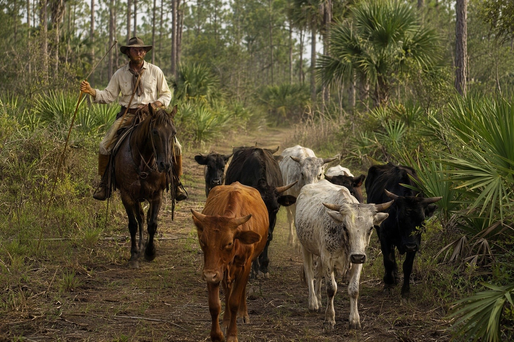

Jacob Summerlin: The Rise of Florida’s Cattle Kingdom
How a Florida Cowman Built a Cattle Fortune and Helped Shape Bartow and Orlando

Jacob Summerlin’s cattle business connected Florida’s open range with Cuba, and his fortune helped support public institutions in Bartow and Orlando. Remembered as the King of the Crackers, he lived through the transition from Spanish Florida to an American state shaped by war, commerce and growing towns.
A Florida Beginning
Summerlin was born in February 1820, while Florida was under Spanish rule. Spain transferred Florida to the United States in 1821. Those dates explain why the often-repeated claim that he was the first non-Native child born after the transfer cannot be correct.
His reputation grew out of cattle work in the Peace River and Kissimmee country. Large herds ranged across extensive grazing land. Gathering and moving them required skilled cowmen, transportation and access to buyers. A successful owner depended on the work of others as well as his own resources.
A Herd Estimate in a Contemporary Journal
On December 31, 1865, federal inspector George F. Thompson encountered Summerlin in the Peace River cattle-shipping trade. Thompson recorded Summerlin’s estimate of about 20,000 cattle and his admission that he did not know the exact number. This is a contemporary estimate, not a verified inventory or an all-time Florida record.
The journal also describes James McKay’s shipments from Tampa or Peace Creek to Havana. Cattle had to be brought from the range to the vessel before an overseas sale could take place. The trade joined inland labor and livestock with a wider Caribbean economy.
War and the Limits of the Record
The Civil War disrupted that economy and drew Florida cattle into military supply networks. Thompson’s postwar account describes Summerlin as aligned with the Confederacy and reports assistance to families during the conflict. Exact contract totals, payment claims and a specified number of blockade voyages need evidence beyond the earlier draft.
Antebellum cattle wealth developed in a society shaped by slavery. The earlier article’s specific slave-for-cattle exchange is not repeated here because the transaction has not been independently established for this edition. Nor would such an exchange prove that a person rejected slaveholding. Philanthropy later in life cannot answer those questions.
Cattle Money and Public Institutions
Summerlin is remembered in Bartow for land given for county, church and educational purposes. The records consulted differ on the precise year of the gift, so this account avoids a disputed date and detailed acreage allocations.
He moved to Orlando in 1873. The Ninth Judicial Circuit’s courthouse history places his $10,000 loan offer in 1875, during a contest over retaining the county seat. It records a courthouse built for $7,800 and repayment over ten years. The event was not a response to a courthouse fire in 1868.
The City of Orlando records a different civic contribution in 1883, when the Summerlin family donated a strip of land around Lake Eola for public use. Orlando recognized the lake as a city park in 1888. The gift contributed to the public space without being a donation of the entire lake.
Reading the Legacy Carefully
Summerlin died in 1893. His story remains visible in the relationship between cattle trade and civic investment. Contemporary journals, institutional records and later biographies illuminate different parts of that story. Keeping their limits clear allows a substantial life to be understood without enlarging it into legend.
Quick Facts
| Born | 1820, before Florida’s 1821 transfer from Spain |
|---|---|
| Nickname | King of the Crackers |
| Herd estimate | About 20,000 in Summerlin’s account to Thompson, December 1865; not an exact inventory |
| Cattle trade | Florida shipping points and Havana |
| Courthouse loan | Orlando, 1875; $10,000 offered and $7,800 construction cost recorded |
| Lake Eola | Family donated a strip of land in 1883; public park recognized in 1888 |
| Died | 1893 |
| Evidence | Contemporary journal, municipal and court histories, later biography |
Discussion Questions
1. How did cattle shipping connect inland Florida with Havana?
2. Why should an estimate be distinguished from a verified inventory?
Related Articles
FLH-0045 — Captain James McKay and the Cuba Cattle Trade
FLH-0046 — Punta Rassa: Florida’s Cattle Port to Cuba
FLH-0305 — Before Texas: Florida’s First Cattle Empire
Sources
Thompson, George F. Journal, December 31, 1865, manuscript pages 79–82. University of Florida transcription, PDF pages 28–29. Source record
Ninth Judicial Circuit Court of Florida. Orange County courthouse history, 1875. Source record
City of Orlando. Lake Eola History. Source record
Florida Memory, State Library and Archives of Florida. Portrait of Jacob Summerlin, 1820–1893. Source record
Akerman, Joe A., Jr., and J. Mark Akerman. Jacob Summerlin: King of the Crackers. Florida Historical Society Press. Publisher record: Source record